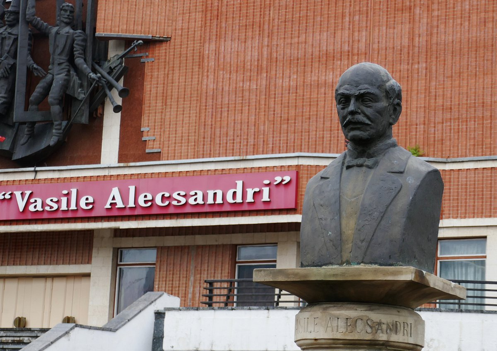
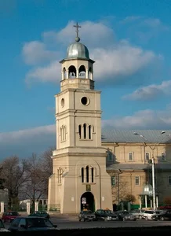
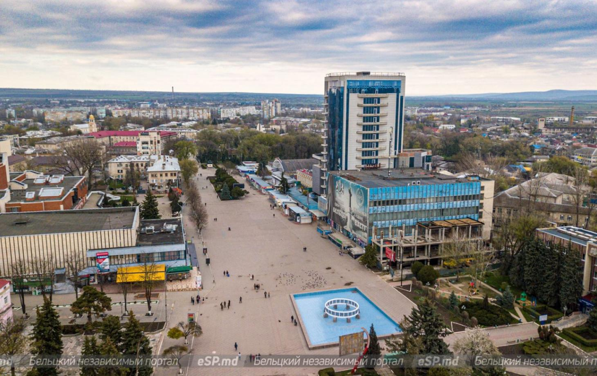
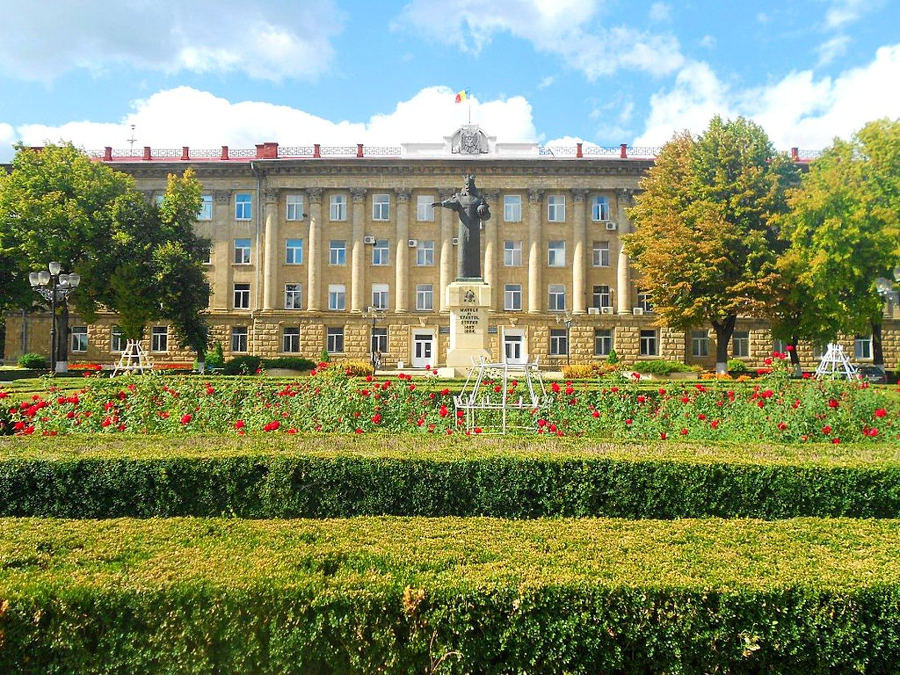
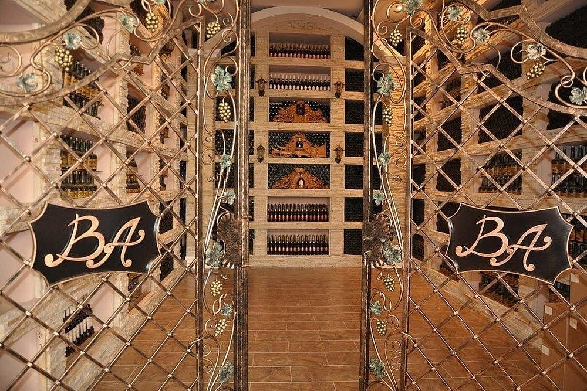

Достопримечательности Бельц
Vasile Alecsandri Square
Национальный театр им. Василе Александри основан 16 мая 1957 года, сначала как молдавская труппа в дополнение русскому театру работавшему в Бельцах с 1947 года. 16 мая 1990 года, стал "Национальным театром Василе Александри города Бельцы". Здание театра было торжественно открыто в этот день, оно имеет два зала (большой и малый), и круговую сцену. Архитектор — Янина Гальперина. За эти годы, в театре поставленно около 190 спектаклей для взрослых и детей — классического и современного, национального и международного репертуара. Театр им. Василе Александри является одним из основных художественных театров страны занимающего постановкой национальной драматургии. Это театр, больше чем любое национальный, потому что его репертуар составлен главным образом из текстов авторов из Молдавии и Румынии. Здесь были собраны произведения «ветеранов пера» из таких как И. Друца, Д. Матковский, П. Караре, и авторами текстов, которые были напечатаны в последние годы: В. Бутнару, Мирча В. Чебану, К. Чеяру. Многие артисты театра являются выпускниками Кишиневского университета искусств Молдовы. С 1994 года в театре работает кукольная труппа "Gigilici". Директор театра — Анатол Рэчилэ.
St. Nicolae Cathedral
Одно из старейших культовых сооружений в городе Бельцы. Это поселение, расположенное на пересечении двух рек, Рэут и Рэуцель, в 1421 году во время правления Александра Доброго принадлежало княгине Ринголид Мазовецкой, сестре литовского князя Владислава II. На более высоком месте у реки Рэут княгиня Мазовецкая строит дворец и небольшую каменную церковь в честь великого святителя Николая. Постепенно вокруг дворца возникло небольшое поселение, которое в том же веке подожгла татарская орда Менгли.
Central market
Центральная площадь Бельц должна стать туристическим местом для всех жителей Молдовы и иностранных туристов, но ее надо облагораживать, придать ей новый облик. Обязательно гостям нужно посмотреть центр города, прогуляться по центральной площади, где интересно и красиво. Весь облик Бельц практически там. Центральные улицы и площадь тоже переделаны практически на 90%. Из старого сохранилось только здание нынешнего ЗАГСа и рядом с университетом здание первой гимназии. Еще одной гордостью северной столицы Молдовы является уникальный театр - Национальный театр имени Василе Александри, в котором, по признанию известных советских и российских артистов, одна из лучших сцен во всем бывшем СССР.
Independence Square
Памятник молдавскому господарю Стефану III Великому (рум. Statuia lui Ștefan cel Mare din Bălți) — бронзовый монумент на Площади Независимости напротив здания примарии (мэрии) города Бельцы, Молдавия. Рядом находится муниципальный парк. Бронзовая статуя Стефана III Великого установлена на постаменте из гранита, добытого возле с. Косоуцы. На голове — корона западного образца. В левой руке господаря держава — символ власти монарха — шар, увенчанный крестом. Правая простёрта в жесте, указывающим на землю Молдавии.
Barza Alba
Замечательная история акционерного общества "Barza Albă" начинается в 1944 году, имеет представительный портфель облагороженных дивинов в возрасте от 3 до 50 лет. Компания сотрудничает с лучшими дистрибьюторами; его розничный рынок простирается от Австралии до США, включая такие страны, как Румыния, Израиль, Китай, страны Балтии, Чехия, Германия, все страны СНГ, Казахстан и Кыргызстан.